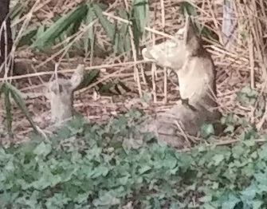

Our Backyard Wildlife
My Boyfriend's quasi-pets
My boyfriend thinks dogs and cats are too much responsibility, but he sure takes good care of the wildlife in his backyard.
He's always talking about:

- the squirrels, at least 4 of them, including:
- the fat king of the roost
- the fat rival
- the little one
- the blue jays

Favorite Foods
The wildlife, especially the squirrels, have my boyfriend well-trained to feed them. Whenever the dish is empty they will stare in the windows until he refills it. After careful observation, he has learned the squirrels favorite foods:
- salted peanuts...they lick the salt off before burying the peanuts.
- sunflower seeds...eaten immediately, but only if the peanuts have run out.
- other trail mix items like corn, but these are frequently left for the birds.
- fresh fruit...only in times of desperation and under cover of darkness...possibly by a yet to be discovered type of backyard pet.
Dead Animals?
Not all the wildlife we found in the backyard was alive... these deer were hidden under the blackberriesa as well!
My Own Wildlife

The wildlife that finds its way into my truck isn't nearly as cute as the wildlife in my boyfriend's backyard.